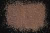

|
|
(For further information on spectroscopy, see:
http://speclab.cr.usgs.gov)
TITLE: Rutile HS126 DESCRIPT
DOCUMENTATION_FORMAT: MINERAL
SAMPLE_ID: HS126
MINERAL_TYPE: Oxide
MINERAL: Rutile
FORMULA: TiO2
FORMULA_HTML: TiO2
COLLECTION_LOCALITY: Oaxaca, Mexico
ORIGINAL_DONOR: Hunt and Salisbury Collection
CURRENT_SAMPLE_LOCATION: USGS Denver Spectroscopy Laboratory
ULTIMATE_SAMPLE_LOCATION: USGS Denver Spectroscopy Laboratory
SAMPLE_DESCRIPTION:
"0-15A. Rutile. Oaxaca, Mexico. (126B). Rutile, TiO2, is not a major rock-forming mineral, but is the commonest form of TiO2 in nature, and is very widely distributed as minute grains in many igneous and metamorphic rocks. Because of its resistance to weathering, it is also common in beach and river sands. TiO2 has a 3d° configuration, so that if a 3d band exists, it will normally be empty. It is possible to supply electrons to the 3d band by excitation from impurities, imperfections, or from the filled 2p band. The intense absorption in the blue is ascribed by Bevan and others (1958) as an exciton band arising from the transfer of an electron from an oxygen to a titanium. This sample contains 0.3% Fe, which does not appear to be located in a crystal field capable of producing the typical ferrous or ferric iron features near 1.0µ or 0.8µ. The steep fall-off in reflectivity toward the blue, which results in the reddish brown color common to rutile, is thus probably caused both by extrinsic absorption in the ferric ion and a sloping of the normal absorption edge in TiO2 because of defects and edge effects. Increasing amounts of ferric iron, niobium, and tantalum, which also enter the TiO2 lattice, result in deeper and deeper color, some varieties being almost opaque. The weak but sharp feature near 2.3µ must be due to some hydroxyl combination tone in this sample of rutile. It is an unusual band because no corresponding band near 1.4µ is apparent, and because chemical analysis of this sample yielded no measurable water. We conclude that a hydroxylated impurity is present in very small amount, and perhaps not at all in the portion of the sample analyzed."
Hunt, G.R., J.W. Salisbury, and C.J. Lenhoff, 1971, Visible and near-infrared spectra of minerals and rocks: III. Oxides and hydroxides. Modern Geology, v. 2, p. 195-205.
IMAGE_OF_SAMPLE:

END_SAMPLE_DESCRIPTION.
XRD_ANALYSIS:
Not Available
END_XRD_ANALYSIS.
COMPOSITIONAL_ANALYSIS_TYPE: None # XRF, EM(WDS), ICP(Trace), WChem
COMPOSITION_TRACE:
COMPOSITION_DISCUSSION:
END_COMPOSITION_DISCUSSION.
MICROSCOPIC_EXAMINATION:
END_MICROSCOPIC_EXAMINATION.
SPECTROSCOPIC_DISCUSSION:
END_SPECTROSCOPIC_DISCUSSION.
SPECTRAL_PURITY: 1c2c3b4b # 1= 0.2-3, 2= 1.5-6, 3= 6-25, 4= 20-150 microns
| LIB_SPECTRA_HED: | where | Wave Range | Av_Rs_Pwr | Comment |
|---|---|---|---|---|
| LIB_SPECTRA: | splib04a r 4284 | 0.2-3.0µm | 200 | g.s.= |
| LIB_SPECTRA: | splib05a r 6013 | 0.2-3.0µm | 200 | g.s.= |
| LIB_SPECTRA: | splib06a r 19695 | g.s.= | ||
| LIB_SPECTRA: | splib06a r 19708 | g.s.= |
{kind=link}